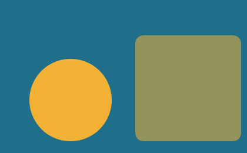
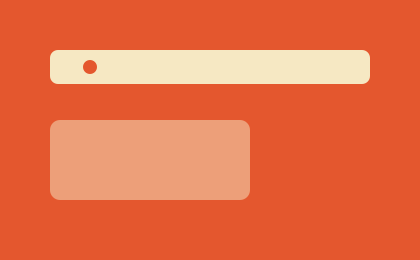

Why every page needs one stylesheet
Copying styles into every file feels fast until you change a colour in three places. One shared file keeps the whole site in step.
Four recent notes on getting started with HTML and CSS.

Copying styles into every file feels fast until you change a colour in three places. One shared file keeps the whole site in step.
Rows, columns, and the two properties that do most of the work. A quick tour of the layout tool I use on every page.

A small active-link style stops visitors getting lost. Here is how I add it to a multi-page site without any JavaScript.
The browser preview lies a little. What I check on an actual phone before I call a page finished.